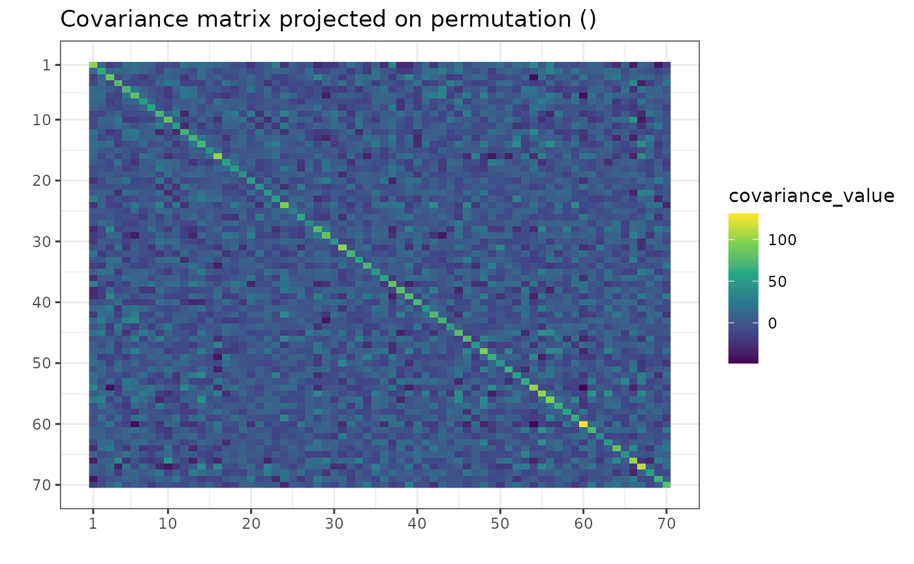
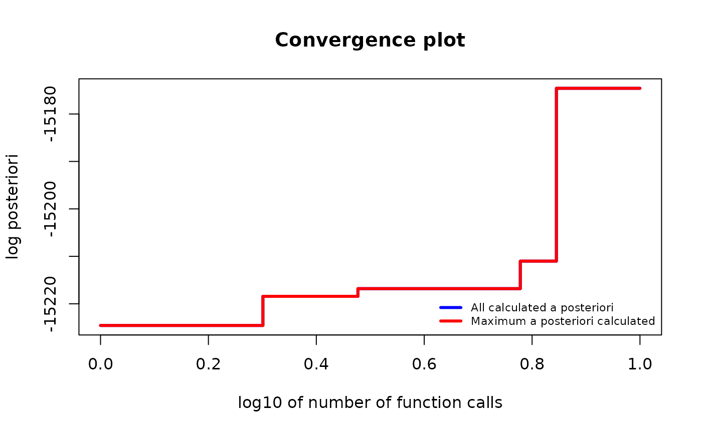
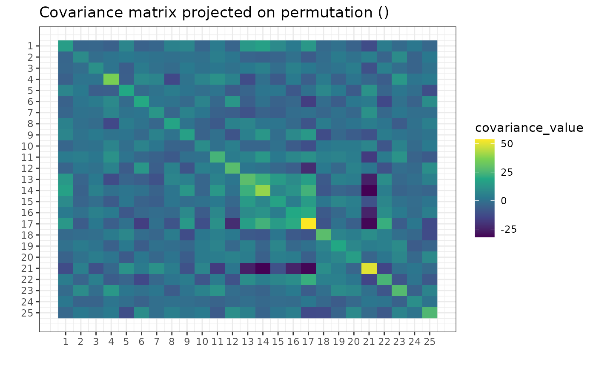
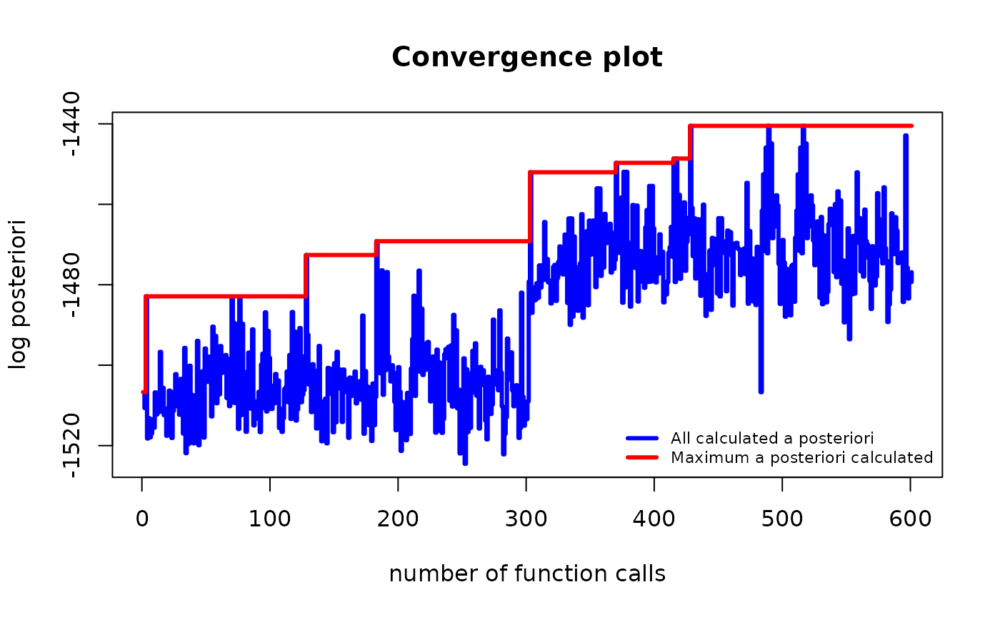

Optimizers
Przemysław Chojecki, Paweł Morgen, Bartosz Kołodziejek
Source:vignettes/Optimizers.Rmd
Optimizers.Rmd
?find_MAPWhat are we optimizing?
The goal of the find_MAP() is to find the permutation
that maximizes the a posteriori probability (MAP - Maximum A
Posteriori). Such a permutation represents the most plausible symmetry
given the data.
This a posteriori probability function is described more in-depth in
the Bayesian model selection section of the
vignette("Theory"), also available as a pkgdown
page. gips can calculate the logarithm of it by
log_posteriori_of_gips() function. In the following
paragraphs, we will refer to this a posteriori probability function as
.
Available optimizers
The space of permutations is enormous - for the permutation of size
,
the space of all permutations is of size
(
factorial). Even for
,
this space is practically impossible to browse. This is why
find_MAP() implements multiple optimizers to choose
from:
-
"Metropolis_Hastings","MH" -
"hill_climbing","HC" -
"brute_force","BF","full"
Metropolis Hastings
This optimizer is implementation of the Second approach from [1, Sec 4.1.2].
This uses the Metropolis-Hastings algorithm to optimize the space; see Wikipedia. This algorithm used in this context is a special case of the Simulated Annealing the reader may be more familiar with; see Wikipedia.
Short description
In every iteration , an algorithm is in a permutation, say, . Then a random transposition is drawn uniformly and the value of is computed.
- If new value is bigger than the previous one, (i.e. ), then we set .
- If new value is smaller (), then we will choose with probability . Otherwise, we set with complementary probability .
The final value is the best that was ever computed.
Notes
This algorithm was tested in multiple settings and turned out to be an outstanding optimizer. Especially given it does not need any hyperparameters tuned.
The only parameter it depends on is max_iter, which
determines the number of steps described above. One should choose this
number rationally. When decided too small, there is a missed opportunity
to find potentially a much better permutation. When decided too big,
there is a lost time and computational power that does not lead to
growth. Our recommendation is to plot the convergence plot with a
logarithmic OX scale:
plot(g_map, type = "both", logarithmic_x = TRUE). Then
decide if the line has flattened already. Keep in mind that the OY scale
is also logarithmic. For example, a small change on the OY scale could
mean
times the change in A Posteriori.
This algorithm has been analyzed extensively by statisticians. Thanks
to the ergodic theorem, the frequency of visits of a given state
converges almost surely to the probability of that state. This is the
approach explained in the [1,
Sec.4.1.2] and shown in [1, Sec. 5.2]. One can
obtain estimates of posterior probabilities by setting
return_probabilities = TRUE.
Example
Let’s say we have the data Z from the unknown
process:
dim(Z)
#> [1] 50 70
number_of_observations <- nrow(Z) # 50
perm_size <- ncol(Z) # 70
S <- cov(Z) # Assume we have to estimate the mean
g <- gips(S, number_of_observations)
suppressMessages( # message from ggplot2
plot(g, type = "heatmap") +
ggplot2::scale_x_continuous(breaks = c(1,10,20,30,40,50,60,70)) +
ggplot2::scale_y_reverse(breaks = c(1,10,20,30,40,50,60,70))
)
g_map <- find_MAP(g, max_iter = 10, optimizer = "Metropolis_Hastings")
#> ========================================================================
#> Warning: The found permutation has n0 = 67 which is bigger than the number_of_observations = 50.
#> ℹ The covariance matrix invariant under the found permutation does not have the likelihood properly defined.
#> ℹ For more in-depth explanation, see 'Project Matrix - Equation (6)' section in `vignette('Theory', package = 'gips')` or its pkgdown page: https://przechoj.github.io/gips/articles/Theory.html.
g_map
#> The permutation (4,60)(22,31)(30,58)(40,68)
#> - was found after 10 log_posteriori calculations
#> - is 5091332471298263613440 times more likely than the starting, () permutation.Only after ten iterations the found permutation is unimaginably more
likely than the original, () permutation.
plot(g_map, type = "both", logarithmic_x = TRUE)
Hill climbing
It uses the Hill climbing algorithm to optimize the space; see Wikipedia.
It is performing the local optimization iteratively.
Short description
In every iteration , an algorithm is in a permutation; call it . Then all the values of are computed for every possible transposition . Then the next will be the one with the biggest value:
Where:
The algorithm ends when all neighbors are less likely, or the
max_iter was achieved. In the first case, the algorithm
will end in a local maximum, but there is no guarantee that this is also
the global maximum.
Notes
The max_iter parameter works differently for this
optimizer and Metropolis-Hastings. The Metropolis-Hastings will compute
a posteriori of max_iter permutations. The Brute Force
optimizer,
max_iter.
Example
Let’s say we have the data Z from the unknown process:
dim(Z)
#> [1] 20 25
number_of_observations <- nrow(Z) # 20
perm_size <- ncol(Z) # 25
S <- cov(Z) # Assume we have to estimate the mean
g <- gips(S, number_of_observations)
plot(g, type = "heatmap")
g_map <- find_MAP(g, max_iter = 2, optimizer = "hill_climbing")
#> ================================================================================
#> Warning: Hill Climbing algorithm did not converge in 2 iterations!
#> ℹ We recommend to run the `find_MAP(optimizer = 'continue')` on the acquired output.
#> Warning: The found permutation has n0 = 24 which is bigger than the number_of_observations = 20.
#> ℹ The covariance matrix invariant under the found permutation does not have the likelihood properly defined.
#> ℹ For more in-depth explanation, see 'Project Matrix - Equation (6)' section in `vignette('Theory', package = 'gips')` or its pkgdown page: https://przechoj.github.io/gips/articles/Theory.html.
g_map
#> The permutation (10,12,18)
#> - was found after 601 log_posteriori calculations
#> - is 57645036230018958320663003136 times more likely than the starting, () permutation.
plot(g_map, type = "both")
Brute Force
It searches through the whole space at once.
This is the only optimizer that will certainly find the actual MAP Estimator.
This is only recommended for small spaces (). It can also browse bigger spaces, but the required time is probably too long.
Example
Let’s say we have the data Z from the unknown process:
dim(Z)
#> [1] 13 6
number_of_observations <- nrow(Z) # 13
perm_size <- ncol(Z) # 6
S <- cov(Z) # Assume we have to estimate the mean
g <- gips(S, number_of_observations)
g_map <- find_MAP(g, optimizer = "brute_force")
#> ================================================================================
g_map
#> The permutation (1,2,4,5)(3,6)
#> - was found after 720 log_posteriori calculations
#> - is 3285.53768904866 times more likely than the starting, () permutation.Additional parameters
The find_MAP() function also has two additional
parameters, namely show_progress_bar and
save_all_perms. Both can be set to TRUE or
FALSE.
The show_progress_bar = TRUE means gips
will print the “=” characters on the console as the optimization run.
Keep in mind that when one sets the
return_probabilities = TRUE, there will be a second
progress bar indicating calculating the probabilities after
optimization.
The save_all_perms = TRUE means that gips
will save all visited permutations in the outputted object. This will
significantly increase the RAM needed for this object (for example, for
and max_perm = 150000, we needed 400 MB to store it, while
with save_all_perms = FALSE, the 2 MB was enough). However,
this is necessary for return_probabilities = TRUE or more
complex path analysis.
Discussion
We are considering implementing the First approach from [1] in the future as well. In this approach, the Markov chain travels along cyclic groups rather than permutations.
We encourage everyone to leave a comment on available and potential
new optimizers on the ISSUE#21. There,
one can also find the implemented optimizers but not yet added to
gips.
References
[1] Piotr Graczyk, Hideyuki Ishi, Bartosz Kołodziejek, Hélène Massam. “Model selection in the space of Gaussian models invariant by symmetry.” The Annals of Statistics, 50(3) 1747-1774 June 2022. arXiv link; DOI: 10.1214/22-AOS2174